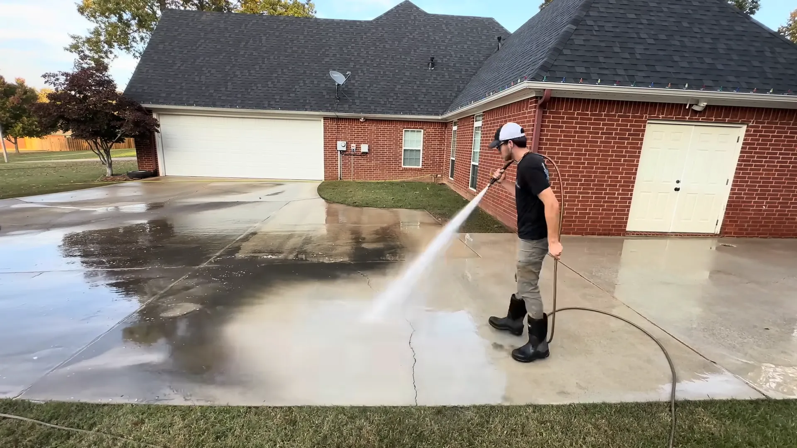

We deliver top-notch commercial pressure-washing services in Houston with high-quality equipment. Our service guarantees a proper cleaning of intense stains and long-stubborn rust with care and safety.
Our team has well-trained professional staff to serve 24/7. We have 10 years of experience cleaning residential property, warehouses, industries, garages, parking lots, and gutter areas.
To clean tough dirt and any type of rough exterior surface, a professional pressure washing service is the most effective solution. We use quality-based chemicals and upgrade high-pressure equipment in our services.
Houston's climate causes heavy dust and intensive damage to rooftops, outdoor stairs, and gutters. So pressure cleaning is the best possible solution for complete cleaning. Our multi-family community pressure-washing service includes a detailed inspection and deep cleaning with modern equipment and experienced staff.
Houston's climate impacts apartment construction and grows mold inside the units' ceilings and exterior floor surfaces. Messy corridors and shabby walkways of apartments disrupt relaxing leisure activities. Our team is experienced in effective pressure washing of apartments, including corridors, parking garages, and swimming pool slippery surface cleaning.
Extreme grime and pollution cause damage to office building surfaces, exteriors, and windows, affecting the company's reputation and client impressions. With proper safety measures, we designed a specialized commercial pressure washing service for offices, including extreme care to avoid damage and off-day cleaning to avoid office-hour disruptions.
We understand the importance of a neat & clean entrance and exterior for retail businesses and shopping centers. Dusty surroundings and stained surfaces lower customer interest. Our service includes suitable washing of sidewalks, parking lots, wall graffiti, and other areas according to surface conditions — at the most cost-effective prices.
Commercial buildings' outdoor seatings, sidewalks, and front entryways' dust causes negative impacts on building appearance. Long-term dirt and grime increase the necessity of renovation at high expense. Our service covers concrete surfaces, exterior metal structures, emergency exit pathways, parking lots, drainage, and runoff areas — available 365 days a year.
Congested grime and dust on dining surfaces, exteriors, and entrances build negative reputations for businesses. We provide systematic safe washes at dining spaces with proper care for furniture and interiors. Night-shift pressure-washing service available to avoid interruptions during customer hours. We ensure hygienic cleaning for your commercial kitchen and dumpster.
Warehouses are large spaces with rough concrete surfaces that accumulate dust, inventory waste, and stains. The metal beams on the ceiling create rust and increased maintenance costs. We carefully remove rust from beams, then apply a final wash of high pressure to rinse away loosened rust and dust for a completely clean environment.
Industrial buildings and sites built up layers of heavy dirt, machinery dust, manufacturing junk, and chemical residue. The accumulation of grime reduces machine efficiency and ventilation blockage, raising the threat of fire and explosion. Our service uses high pressure of 2000–3500+ PSI with a 3–5 GPM rate, specially designed for industrial cleaning.
Parking garages are mostly covered with deep stains, mold, tire marks, and rust. Automobiles leak fuel, engine oil, and brake fluid that spreads throughout, making surfaces slippery and leading to injuries. We do deep surface cleaning to remove tire marks, greasy stains, and debris around garage drains, ensuring adequate water flow.
Due to regular transport & shipments, fleet vehicles accumulate road dust, mud, diesel soot, oil stains, and brake dust. Over time, pollutants cause a discolored appearance, rust risk, and reduced vehicle lifespan. We understand vehicles require a safe cleaning process due to the engine and sensitive particles, and we cautiously use the pressure speed to maintain proper safety.
We provide damage-free finest cleaning of vehicle tires, mud, greasy dirt, and other essential particles.
Commercial pressure provides reliable, fast, and powerful washing to remove heavy dirt, rough concrete surfaces, and industrial grime. Compared to soft washing, the commercial pressure washing cleansing process is more effective.
The commercial pressure washing process uses a high-speed water spray of approximately 1300 to 4000 PSI, according to the particular surface, to efficiently wash off thick dirt, grime, and dark stains. The soft washing process supplies a large quantity of water with chemicals in a low-pressure spray, which is not effective for tough dirt and greasy stains.
Commercial pressure washing uses a few chemicals with good-quality, top-notch equipment and tools, which secure the longevity of assets. Soft washing uses huge amounts of chemicals, which could damage assets' durability.
Commercial pressure washing facilitates property enhancement using safe deep cleanings. However, soft washing is not able to ensure deep-embedded corrosive cleaning, which could initiate property deterioration.
Hard surfaces require deep washing but with a gentle process. Commercial pressure washing employs professional staff who are trained regarding it. Soft washing provides a low-speed process for all kinds of surfaces, which isn't calibrated for hard-surface needs.
Buildings need to stay for a long time. For the longevity of these big assets, proper maintenance is required. Commercial pressure wash enhances building visual appearance, helps to protect paints, and reduces metal corrosion. In comparison, soft washing cleanliness stays for a short period, which is insufficient for building maintenance. Pressure washing is the ultimate solution for long-term cleanliness and safety.
We don't just spray water — we follow a systematic, professional process that protects your assets and delivers results that last.
We do a proper pre-wash inspection of the property to make sure of the full protection of sensitive portions and components — such as covering the electricity box, taping over electric sockets, and securing windows. We consciously observe the surface condition to identify dirt levels, rust, cracks, damaged surfaces, and drainage issues to apply the correct pressure level and cleaning method.
We design a well-tailored strategy based on our detailed inspection. We also precheck our equipment to prevent any kind of obstacle during the washing process.
Immediately after we finish the pressure washing, we double-check the entire area to ensure no spot was missed and no dirt was left out. Our service also includes post-pressure wash proper care guidelines, such as surface drying period and protection for future stains.
After pressure washing, buildings and property need postcare such as routine-based surface rinse, proper ventilation, and examination for new stains or grime. We provide schedule-based guidelines for building maintenance to keep your property in top condition long-term.
Our service assures no harm to resident health and maximum durability. Every process is designed with occupant safety in mind — from using eco-friendly chemicals to ensuring zero slip hazards remain after our service is complete.
The required time to complete pressure washing totally relies on the area, property, and depth of pollution and accumulated dirt.
It's essential to know the ideal time frames for pressure washing before you start. A sudden or unorganized washing schedule often creates difficulties. Here are useful timing schedules you should know:
Winter is a highly cold and freezing-weather season that interrupts and delays the drying process for pressure washing. After winter, the spring season provides moderate weather, which is helpful to naturally fast-dry the property or surfaces.
Select a balanced weather that's temperature is not too high or too cold. It's an ideal time for pressure washing because it helps to perform a cleansing procedure properly with no risk of damage.
Just before painting on the property or any exterior, pressure washing should be done. Because it cleans out preexisting stains and other dirt, which will give your paint a smooth coating and make it long-lasting.
According to the surroundings, environment, place of residence, and atmospheric conditions, it's recommended to use pressure washing between 6 to 12 months.
Ready to make your commercial property shine? Contact us today and our Houston-based team will get back to you within 2 business hours.